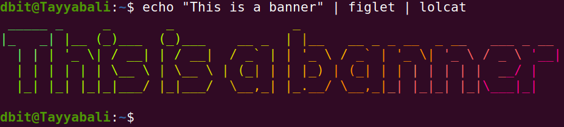
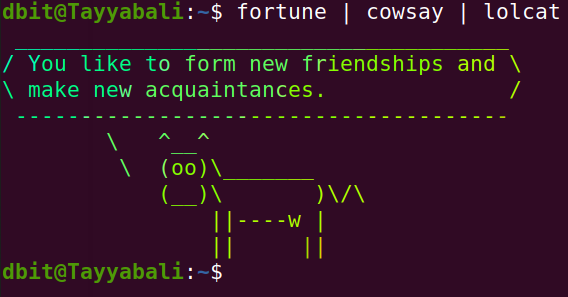
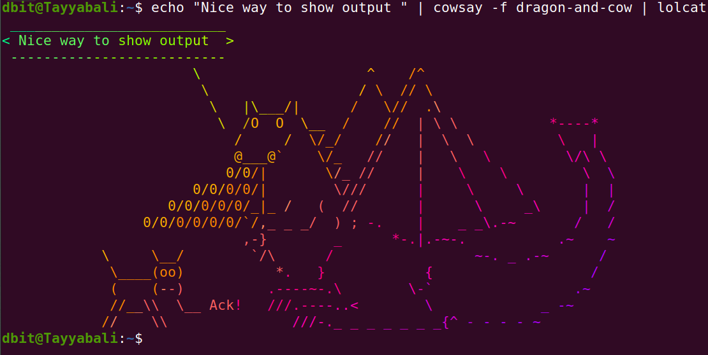

Execution of Unix General Purpose Utility Commands
Execution of Unix General Purpose Utility Commands
Comand line is the primary and mostly used way to interact with the Linux systems
We use
echo Command
echo command in unix is used to display text on screen. echo is also used for other purposes like creating file or listing the files from the directory and displaying the value of the variables.
Some of the examples of the echo commands are as follows.
$ command -options
the $ is the default command line prompt which says its a normal user session.
if you switch to the root user it will change to #
echo hi
echo "Hello"
a = 10
echo $a
We define variable a and assign value 10 to it. Using echo then wee can display its value.
Fun with command line
You can install some of the command line output formatting tools like cowsay, figlet etc and decorate the output in very unique and fun way.
Install these tools on ubuntu using following commands
$ sudo apt install cowsay
$ sudo apt install fortune
$ sudo apt install figlet
$ sudo apt install lolcat
You can then try following examples and try with different options
dbit@Tayyabali:~$ cowsay Hello
_______
< Hello >
-------
\ ^__^
\ (oo)\_______
(__)\ )\/\
||----w |
|| ||
Cowsay basically generates an ASCII picture of a cow saying something provided by the user as shown above.
dbit@Tayyabali:~$ fortune
Q: Why is Christmas just like a day at the office?
A: You do all of the work and the fat guy in the suit
gets all the credit.
dbit@Tayyabali:~$ fortune
Tempt not a desperate man.
-- William Shakespeare, "Romeo and Juliet"
fortune will basically give you anything random text from the files , which is fun and interesting to read
dbit@Tayyabali:~$ figlet DBIT
____ ____ ___ _____
| _ \| __ )_ _|_ _|
| | | | _ \| | | |
| |_| | |_) | | | |
|____/|____/___| |_|
Figlet will display the given text into large text which is made out of other screen characters.
echo Hello | lolcat
Hello
lolcat will display the text in rainbow colors.
Here in the above example we are passing the output of the echo command to the lolcat to display in rainbow colors
You can try following examples on your linux system and observer the outputs and play around it.
$ echo "This is a banner" | figlet | lolcat

$ fortune | cowsay | lolcat

$ echo "Nice way to show output " | cowsay -f dragon-and-cow | lolcat

clear
Using clear command you can clear the screen content. You can also use Ctl + l to do the same task.
exit
exit can be used for
-
to get out of the terminal
-
to exit from the ssh session
-
to exit from the user login from the command line
date
Use data in terminal or in shell programming to fetch the date or to calculate arthimatic operations on date
Some of the examples of teh date are given as follows
date
date 2022
uptime
Uptime command gives you information about your system like when it started, how long it is running etc
dbit@Tayyabali:~$ uptime
16:13:53 up 7:32, 2 users, load average: 0.79, 0.41, 0.28
As you ca see in the above example, first column shows the curent time, second show hw long the system is running in hrs and minutes, 2 users are logged in and system load for the last 1, 5 and 15 minutes
Use -p to print information in pretty format
dbit@Tayyabali:~$ uptime -p
up 7 hours, 35 minutes
To find out when your system started you can use -s option
dbit@Tayyabali:~$ uptime -s
2022-02-23 08:40:54
It shows system started at 23rd Feb 2022 and at 8:40:54 am
cal
cal command like date show the entire Calendar
Execute following commands on your system and check the output
dbit@Tayyabali:~$ cal
February 2022
Su Mo Tu We Th Fr Sa
1 2 3 4 5
6 7 8 9 10 11 12
13 14 15 16 17 18 19
20 21 22 23 24 25 26
27 28
only cal will print curent months calendar
You can specify month and year or only year also.
dbit@Tayyabali:~$ cal March 2022
March 2022
Su Mo Tu We Th Fr Sa
1 2 3 4 5
6 7 8 9 10 11 12
13 14 15 16 17 18 19
20 21 22 23 24 25 26
27 28 29 30 31
tty
Lets see first what tty command gives us
dbit@Tayyabali:~$ tty
/dev/pts/1
tty is basically teletype which is a standard file name using which we are connected to standard input. If you open another terminal and check it will give you output as /dev/pts/2 which is second file. You can see below as you open more terminals corresponding files are created under /dev/pts directory.
dbit@Tayyabali:/dev/pts$ ls
0 1 2 3 ptmx
On most of the distribution you can open multiple terminal screen, mostly 6 are supported. You can use following key combinations to login on these termials
CTRL + ALT + F1 – Lockscreen
CTRL + ALT + F2 – Desktop Environment
CTRL + ALT + F3 – TTY3
CTRL + ALT + F4 – TTY4
CTRL + ALT + F5 – TT5
CTRL + ALT + F6 – TTY6
You can switch between these terminals and have simultinous sessions also.
man
man is nothing but mannual help on Linux. Its online help which you can use on terminal.
Syntax is as follows
man [options] [section] [command]
Lets try